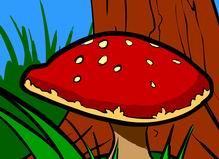
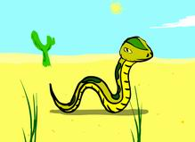

지난 여름에 유행했던 '팥죽송' 이라는 플래시 무비를 기억하는가?
기억 못할까봐 그림도 편집해봤다.
원래 노래 제목은 'Badger's song' 이지만 가사 앞부분에 'badger' 라는 단어에서 '팥죽송' 이라는 명칭이 붙여졌다.
가사는 이렇다. (연관되는 그림도 붙여봤다.)
badger, badger, badger, badger, badger, badger, badger, badger, badger, badger, badger

mushroom, mushroom
(이상 x 4회)

Badly, ghastly snake, snake. Ooooh, it's a snake. It's a
(이후 무한 반복)
* 플래시 무비를 곁들여 보여주고 싶지만 내 블로그가 산만해질까봐 넣지 않았다. *
얼핏 보기에는 무의미한 단어들의 반복일 뿐이다.
정말 그럴까?
이 노래에 대한 당시 해석은 '미국의 이라크전에 대한 비유' 였다.
다음은 엠파스 지식검색에서 찾은 '팥죽송의 해석' 이다.
반복되는 단어가 계속 나오죠.
badger(오소리), Mushroom(버섯-플래쉬에서는 독버섯으로 표현됩니다.)
마지막으로 Snake(뱀..)
뭔가 암시하는 노래로 보시면 될텝니다.
나름대로 분석하신 분 얘길 들어 보면
미국이 이라크전을 비유한 노래라고 하더군요.
플래쉬에 나오는 오소리는 이라크전 당시의 미군 복장..
(badger의 뜻은 경멸스런 노인, 또는 wisconsin 주 출신자)
버섯(독버섯)은 핵이 폭발할 때 그것의 모습과 닮았죠.
(mushroom의 뜻은 버섯말고도, 버섯구름, 베일에 싸인 사람등의 의미가 있습니다.)
그리고 뱀이 나오는데 뱀은 음흉하고 냉혹한 사람, 방심할수 없는 적 정도로 해석이 된다네요.
이걸 조합 해 보면 이라크전 당시의 미군병사 또는 미국(badgers)이 이라크의 핵시설 또는
핵과 관련된 무언가(mushroom)를 노리자 후세인(snake)이 도망을 간다..(사막을 기어가는 뱀이 나오죠.)
이 정도로 해석을 할 수가 있겠죠.
또 다른 사람은 이 노래를 북한 핵사태에 비유해서 곧 우리나라에 다가올 전쟁을
암시 해 주고 이 노래를 퍼트림으로써 세뇌를 시키는거라네요.
하지만 내 생각은 조금 다르다.
이 노래는 총 8개의 단어로 구성되어 있으며 이 중에 명사는 3개다.
바로 badger, mushroom, snake 이다.
의미는 다들 아는 바 대로
badger = 오소리, 오소리 털가죽
mushroom = 버섯, 버섯 모양의
snake = 뱀
이정도가 된다.
이것을 다음과 같이 풀이해 보았다. (엠파스 영어 사전 참조)
badge + r = 뱃지 + 사람(~r, ~er 은 사람을 뜻한다)
mush = [구어] 허튼소리
room = 방, 실
snake = (명) 뱀, 뱀 같은 인간, 악의가 있는 사람. (속어)나쁜 일을 꾸미다, 꾀하다
이 해석대로라면 badger 는 뱃지를 가진 사람을 뜻하고 mushroom 은 헛소리 하는 장소를 말한다. 딱히 한가지로 풀이하긴 어렵지만 snake 는 여러가지 나쁜 뜻으로 사용되는 단어임이 분명하다.
잘 보면 오소리의 색상 배치가 일반 오소리와는 다르다. 마치 양복을 입고 있는 사람 같다.
[원래 오소리는 이런 색이다]
이쯤 생각해보니 국회가 떠오른다.
단지 내가 요즘 정치에 민감해져서 일까?